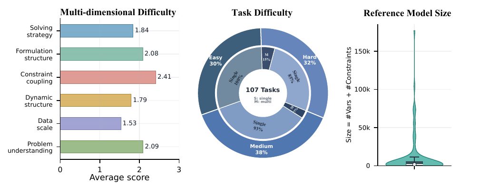

HUAWEI NOAH’S ARK LAB / AI4OPT
A complex world,in simpler terms.
AI for optimization modeling
Our research brings language models and operations research together to formulate problems, verify models, and explain decisions.
Latest news
Earlier updates
Selected works

Opt-Verifier
Check both the model structure and its solutions to make optimization modeling more reliable.

Opt-Miner
Teach modeling agents to recognize knowledge gaps and seek the information they need.

ORAgentBench
Evaluate OR agents from operational data to executable, validated decisions.

DeepOR
Learn optimization modeling through flowchart-guided reasoning and solver-feedback training.

OptiTree
Reuse modeling knowledge through a hierarchy of simpler optimization problems.

Chain-of-Experts
Coordinate specialized experts to model and program complex operations research problems.
AI for better modeling.
Models for better decisions.
We are the intelligent optimization modeling team within AI4OPT at Huawei Noah’s Ark Lab. Our research connects language models, operations research, and practical decision-making — from model construction and verification to revision and explanation.
Contact details forthcoming.